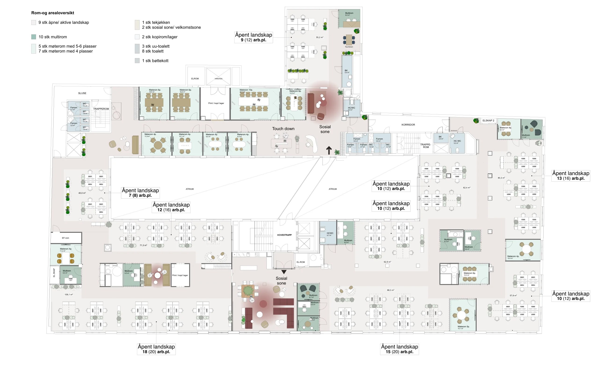
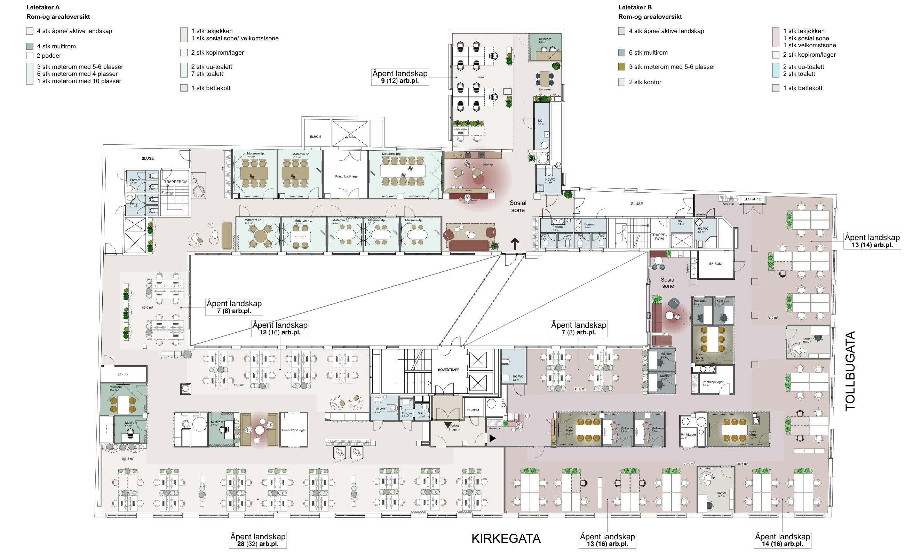
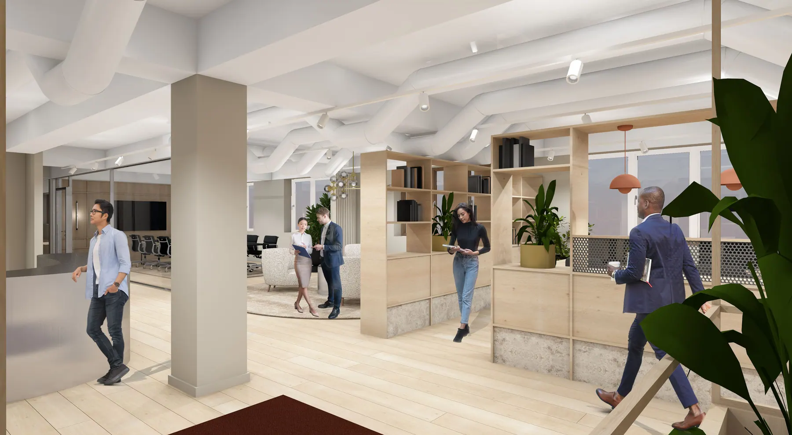
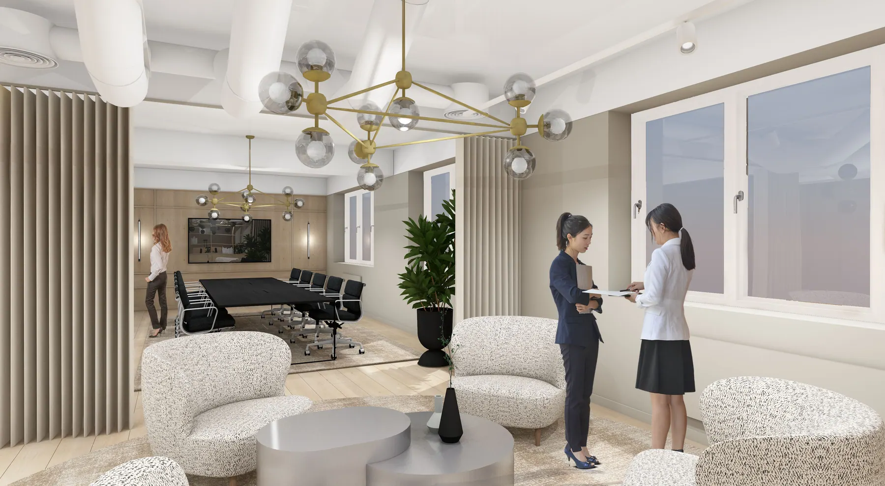
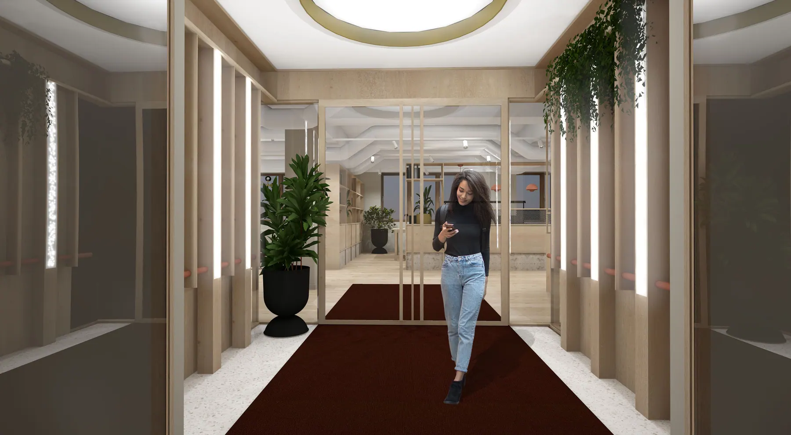
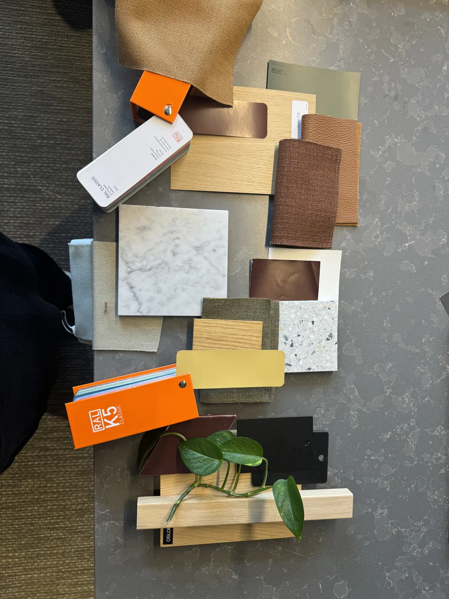

Tegnet for leietakeren
Monn Interior Architects er interiørarkitekt for Kirkegata 15. Hver ny leietaker får etasjen tegnet etter sitt eget romprogram, med materialer, møbler og oppfølging til innflytting.
Eksempel: 6. etasje
Planforslagene fra september 2026. Samme etasje er tegnet for én leietaker og for to.

- 9 åpne og aktive landskap
- 10 multirom
- 5 møterom med 5 til 6 plasser
- 7 møterom med 4 plasser
- 1 tekjøkken
- 2 sosiale soner og velkomstsoner
- 2 kopirom og lager
- 3 UU toaletter og 8 toaletter
- 1 bøttekott

Leietaker A
- 4 åpne og aktive landskap
- 4 multirom og 2 podder
- 3 møterom med 5 til 6 plasser
- 6 møterom med 4 plasser
- 1 møterom med 10 plasser
- Tekjøkken, sosial sone og velkomstsone
Leietaker B
- 4 åpne og aktive landskap
- 6 multirom
- 3 møterom med 5 til 6 plasser
- 2 kontor
- Tekjøkken, sosial sone og velkomstsone
Slik kan det se ut
Visualiseringer tegnet for leietakere i bygget, og rom som allerede er bygget.






Dette får en ny leietaker
Romprogram
Leietakeren forteller hvor mange som skal jobbe der, hvordan de jobber og hvilke rom de trenger. Det blir romprogrammet.
Planløsning
Monn tegner etasjen i 1:200 med møblering og en rom og arealoversikt, gjerne i flere alternativer. Arbeidsplassene telles i hvert landskap.
Materialer og farger
Overflater, tekstiler, tepper og maling legges fram på plansjer, slik at leietakeren kan ta på dem og kommentere direkte.
Visualiseringer
Viktige rom vises i 3D, slik at alle ser hvordan resepsjon, landskap og møterom blir før noe bygges.
Spesifikasjon
Møbleringsplan med spesifikasjoner, og planer for gulv, vegger, himling og belysning, er grunnlaget for ombyggingen.
Oppfølging
Monn følger prosjektet gjennom byggeperioden med leietakermøter fram til innflytting.
Prosjektet går i fire faser, som på tegningene: skisse og konsept, forprosjektering, prosjektering og sluttprosjektering. Lokalet leveres etter gårdeiers faste standard for himling, vegger, glass, gulv, kjøkken og toaletter.
Monn Interior Architects
Interiørarkitektene som har tegnet leietakertilpasningene, kantinen og møtesenteret i Kirkegata 15.
Karl Johans gate 16, 0154 Oslo
info@monn.no, +47 459 11 251